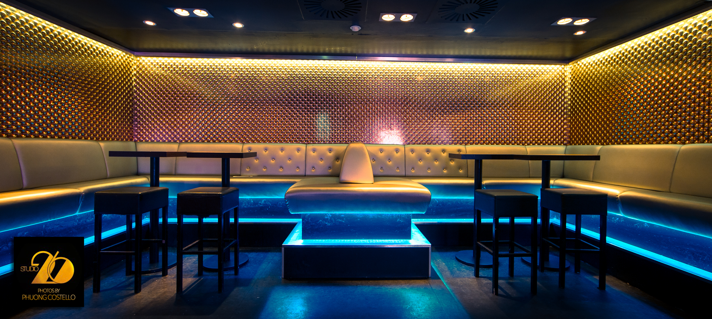

Studio 26

Studio 26 holder til i tre etasjer midt i Trondheim sentrum. Glitrende lysekroner, discokuler og et fargerikt lokalet i samspill med et fullverdig Funktion One lydanlegg setter stemningen, og med høyt fokus på service og kvalitet, ønsker vi å levere en heftig nattklubb opplevelse for våre gjester
ÅPNINGSTIDER
Torsdag, fredag og lørdag fra klokken 22:00 til 02:30
STUDIO 26
–
NORDRE GATE 26
7010 TRONDHEIM
–
TELEFON: 459 02 400